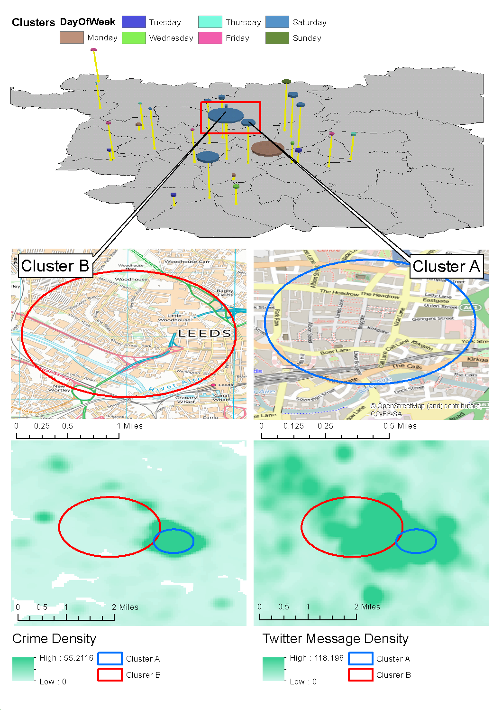

Me
BSc Computer Science
MSc Multidisciplinary Informatics
PhD (Computational) Geography
Main interests:
Agent-based modelling
Crime analysis
Insights into urban dynamics through 'big' data
Main Interests
XXXX HERESimulating Urban Flows
3-year research fellowship, funded by ESRC (UK)
Build an agent-based simulation of daily urban dynamics
Calibrated using a combination of traditional sources (e.g. census) with dynamic, crowd-sourced data
New insights into urban mobility patterns
Aims
Create an agent-based simulation that is capable of modelling the individual movements of people in an urban environment as they undertake their daily routine activities (commuting, shopping, schooling, etc.)

ABM
Simulate daily urban dynamics
Shopping, commuting, education, etc.
Better understand daily urban mobility patterns
Research at SENSEable Cities
World leader in understanding cities through novel data analysis
Find out how you interrogate cities through ‘big’ data
Collaborate on a particular case study area
Integrating data for a chosen city
Build new data / insight into a bespoke ABM